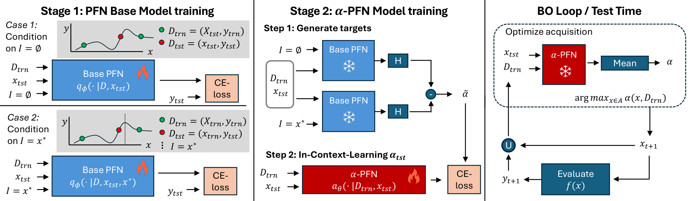
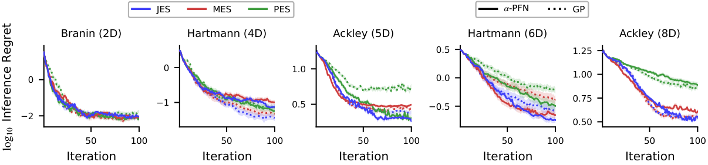
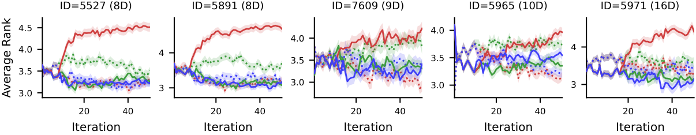
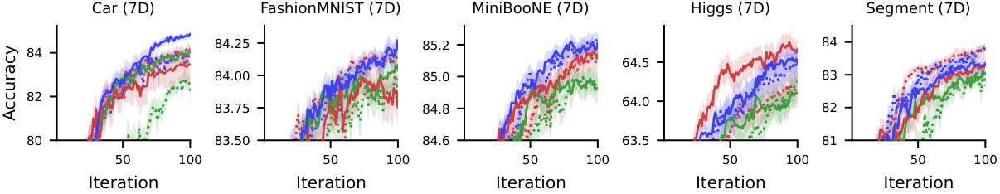
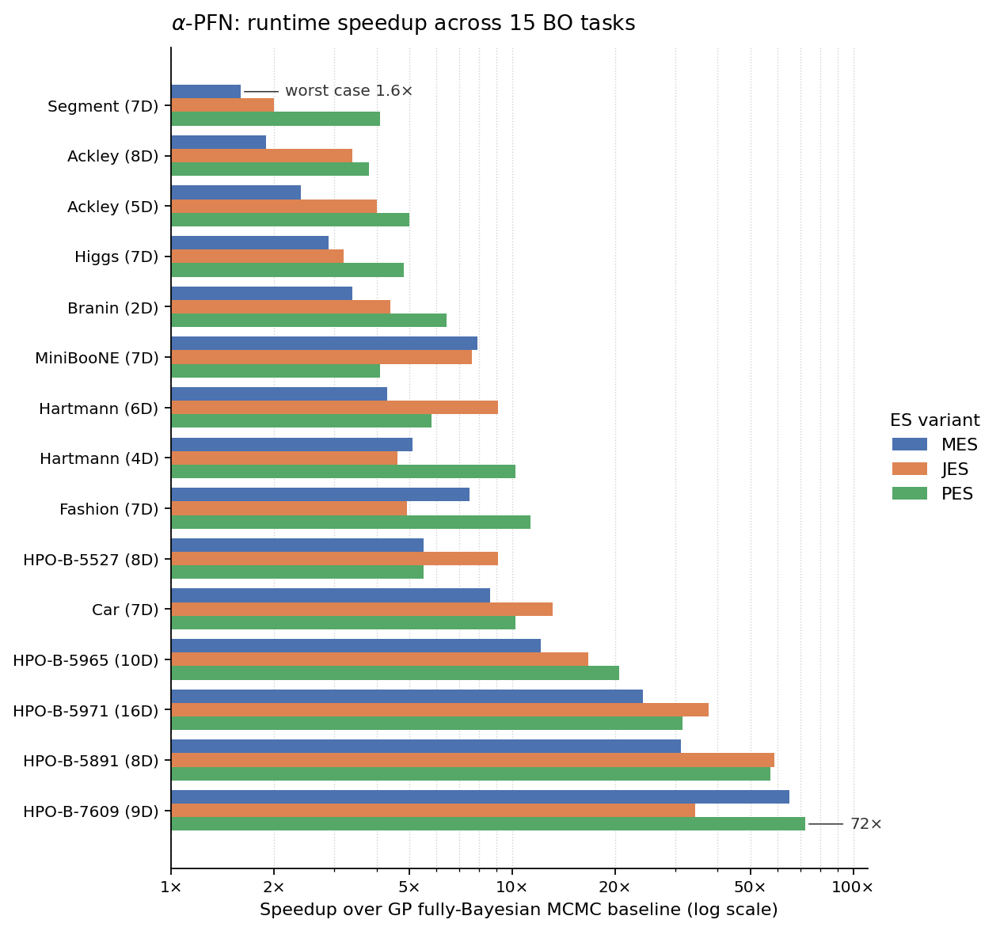

Abstract
Information-theoretic acquisition functions such as Entropy Search (ES) offer a principled exploration–exploitation framework for Bayesian optimization (BO). However, their practical implementation relies on complicated and slow approximations — typically a Monte-Carlo estimation of the information gain. This complexity can introduce numerical errors and requires specialized, hand-crafted implementations.
We propose a two-stage amortization strategy that learns to approximate entropy-search-based acquisition functions using Prior-data Fitted Networks (PFNs) in a single forward pass. A first PFN is trained to be conditioned on information about the optima; second, the $\alpha$-PFN is trained to predict the expected information gain by training on information gains measured with the first PFN. The $\alpha$-PFN offers a flexible learned approximation that replaces the complex heuristic approximations with a single forward pass per candidate, enabling rapid and extensible acquisition evaluation.
Empirically, our approach is competitive with state-of-the-art entropy search implementations on synthetic and real-world benchmarks, while accelerating the different entropy search variants across all our experiments — with speed-ups of up to 50×.
Try it in 30 seconds
pip install AlphaPFN
Drop $\alpha$-PFN into any BoTorch[8] loop. The model is the acquisition function:
import torch
from botorch.optim import optimize_acqf
from botorch.test_functions import Hartmann
from alphapfn import AlphaPFN
# 1. Objective on the unit cube. α-PFN maximizes; `negate=True` flips Hartmann's sign.
hartmann = Hartmann(dim=6, negate=True)
# 2. Initial design.
torch.manual_seed(0)
d, n_init, num_steps = 6, 6, 30
X = torch.rand(n_init, d, dtype=torch.double)
y = hartmann(X)
bounds = torch.stack([torch.zeros(d), torch.ones(d)]).double()
# 3. Load the pretrained acquisition; checkpoints download on first call.
acqf = AlphaPFN.from_pretrained(acquisition="JES")
# 4. BO loop. Exactly the same as any BoTorch acquisition.
for step in range(num_steps):
acqf.fit(X, y)
X_next, _ = optimize_acqf(acqf, bounds=bounds, q=1,
num_restarts=10, raw_samples=128)
y_next = hartmann(X_next.squeeze(0))
X = torch.cat([X, X_next.detach().double()])
y = torch.cat([y, y_next.detach().double().reshape(1)])
print(f"step {step+1:>2}: best so far = {y.max().item():.4f}")
Entropy-search heads: "PES", "MES", "JES".
"EI" and "UCB" are also supported.
Full notebook on
Colab.
Method
Entropy search[1] acquisitions all share the form
$$ \alpha_{\mathrm{ES}}(x, D) \;=\; H\!\bigl(p(y \mid D, x)\bigr) \;-\; \mathbb{E}_{I \sim p(I \mid D)}\!\Bigl[\,H\!\bigl(p(y \mid D, x, I)\bigr)\Bigr], $$where $I$ is the conditioning information about the optimum: $I = x^\star$ for PES[2], $I = f^\star$ for MES[3], and $I = (x^\star, f^\star)$ for JES[4][5]. The original entropy-search formulation conditions on $x^\star$ alone[1]. In practice both terms are intractable. $p(y \mid D, x, I)$ has no closed form, and the outer expectation requires sampling optima from $p(I \mid D)$ via random Fourier features[9]. Classical implementations replace one expensive intractability with another, stacking moment matching, local constraints and Monte-Carlo averaging on top of each other.
$\alpha$-PFN replaces the two intractable pieces with two PFNs, trained once and reused at every BO step.
1. The base PFN, amortizing the conditional posterior. A first transformer is trained on millions of GP samples (with their true $x^\star, f^\star$ precomputed via RFF[9]) to predict $q(y \mid D, x, I) \;\approx\; p(y \mid D, x, I)$ in a single forward pass, for any subset $I \subseteq \{x^\star, f^\star\}$. Because $q$ is a discretized PPD (Riemann distribution)[6], its entropy $H(q(y \mid D, x, I))$ is closed-form. This already collapses every per-sample evaluation in the inner term of the equation above into one forward pass (see the left panel of the figure).
2. The $\alpha$-PFN, amortizing the outer expectation. The key is a train/inference asymmetry. At training time, every synthetic dataset comes with its own precomputed optimum $I$ (from the RFF sample[9]), so the realized information gain $$ H\!\bigl(q(y \mid D, x)\bigr) \;-\; H\!\bigl(q(y \mid D, x, I)\bigr) $$ is a closed-form scalar and can be used as a regression target for that $(D, x)$ (middle panel of the figure). The $\alpha$-PFN itself only sees $(D, x)$, never $I$, and outputs a Riemann distribution over this information gain. Because each training pair $(D, x)$ is paired with a single random draw of $I$, the standard PFN training argument[6] applies: fitting these targets makes the predictive mean converge to $\mathbb{E}_{I \sim p(I \mid D)}\!\left[\,H(q(y \mid D, x)) - H(q(y \mid D, x, I))\,\right]$, which is exactly the entropy-search acquisition. At inference time the optimum information is no longer needed: a single forward pass on $(D, x)$ returns the acquisition value, with the expectation over $I$ already absorbed into the model weights (right panel).
One $\alpha$-PFN is trained per ES variant; the base PFN is shared. A fully-Bayesian treatment comes for free, since hyperpriors are integrated out at train time.

Results
$\alpha$-PFN matches hand-crafted entropy-search baselines across synthetic and real-world benchmarks.



See the paper for full benchmarks, ablations, and runtime tables.
Runtimes
Speedup vs. the fully-Bayesian GP–MCMC baseline across 15 BO tasks (2D – 16D, continuous and discrete). Each row shows the speedup for MES, JES, and PES on that task; rows are sorted from worst-case to best-case speedup.

References
Selected works that $\alpha$-PFN builds on. The full bibliography is in the paper.
- P. Hennig and C. Schuler. Entropy search for information-efficient global optimization. JMLR, 2012.
- J. M. Hernández-Lobato, M. W. Hoffman, and Z. Ghahramani. Predictive entropy search for efficient global optimization of black-box functions. NeurIPS, 2014.
- Z. Wang and S. Jegelka. Max-value entropy search for efficient Bayesian optimization. ICML, 2017.
- C. Hvarfner, F. Hutter, and L. Nardi. Joint entropy search for maximally-informed Bayesian optimization. NeurIPS, 2022.
- B. Tu, A. Gandy, N. Kantas, and B. Shafei. Joint entropy search for multi-objective Bayesian optimization. NeurIPS, 2022.
- S. Müller, N. Hollmann, S. Pineda Arango, J. Grabocka, and F. Hutter. Transformers can do Bayesian inference. ICLR, 2022.
- S. Müller, M. Feurer, N. Hollmann, and F. Hutter. PFNs4BO: In-context learning for Bayesian optimization. ICML, 2023.
- M. Balandat, B. Karrer, D. R. Jiang, S. Daulton, B. Letham, A. G. Wilson, and E. Bakshy. BoTorch: A framework for efficient Monte-Carlo Bayesian optimization. NeurIPS, 2020.
- A. Rahimi and B. Recht. Random features for large-scale kernel machines. NeurIPS, 2007.
BibTeX
@inproceedings{rakotoarison2026alphapfn,
title = {{$\alpha$}-PFN: Fast Entropy Search via In-Context Learning},
author = {Rakotoarison, Herilalaina and Adriaensen, Steven and Viering, Tom
and Hvarfner, Carl and M{\"u}ller, Samuel and Hutter, Frank and Bakshy, Eytan},
booktitle = {Forty-third International Conference on Machine Learning},
year = {2026},
url = {https://openreview.net/forum?id=7Oonij8oLU}
}